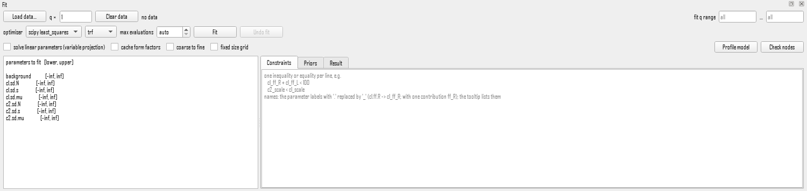

Fitting
The explorer’s Fit dock and the script interface use the same engine, pysasfit.studio.fitting.FitProblem.
Ingredients
Parameters are the ticked rows. Each has a start value and optional bounds; bounds are a uniform prior.
Parameters can be common to several data sets or separate per data set; global parameters P1, P2, … drive model
parameters through links (see Several data sets).
Constraints are inequalities or equalities between parameters, for example that the first population is larger
than the second (c1_sd_mu > c2_sd_mu) or that two fractions add up to 1 (c1_scale + c2_scale == 1). The names are
the parameter labels with . replaced by _. In the explorer a model with several contributions labels the
parameters c1.sd.mu, c2.sd.mu, …; with a single contribution they are sd.mu (sd_mu). In a script the labels
are those of the FitProblem (sd.mu for contribution 0, 1.sd.mu for contribution 1); a label that starts with a
digit gets a c in front (c1_sd_mu). problem.identifiers() lists the usable names.
Priors add knowledge to the data, one per line as label form args:
form |
example |
meaning |
|---|---|---|
Gaussian |
|
a known value with uncertainty |
log-normal |
|
a positive scale known to a factor |
half-normal |
|
a relative width that is probably small |
log-uniform |
|
a scale that may span decades |
See Priors in the reference for the penalty terms and which optimisers accept which prior.
Several data sets and global parameters
As in SASfit, several data sets can be fitted together with one model whose contributions belong to some of them.
Add data… in the Fit dock takes one or several files; every file is a data set, numbered 1, 2, … in the list below the buttons (shown from two data sets on). Remove drops the selected ones, Clear all all.
Every contribution tab has contributes to data sets:
all(default),1, 3or2-4. The model curve of a data set is the sum of its contributions plus its own background. The tab title shows the data sets.The background rows of the Mixture box show the background of the data set chosen in background above is that of data set; switch it to edit (or tick for fitting) the background of another data set. Data points, model curves and residuals have one colour per data set; the dotted contributions are those of the chosen data set.
A ticked parameter is common to all data sets it appears in. Tick per data set in the table of parameters to fit to get one value per data set instead (
background[a.dat],background[b.dat], …) — typically the backgrounds, or the scale of a contribution shared by data sets of different concentration.Global parameters (tab Global parameters): Add P makes
P1,P2, … with value, fit box and bounds. Links, one per line, make model parameters follow them, each with a factor:c1.ff.R = P1 radius of contribution 1 = P1 c2.ff.R = 2 * P1 contribution 2: twice that c1.sd.mu[2] = 0.5 * P2 only in data set 2 background[1,3] = P3 the same background in data sets 1 and 3
The left side is a parameter name of the fit table (
ff.R,c1.ff.R,c1.scale,background,bg.A…; with a single contributionff.Rorc1.ff.R), the right side any expression of the global parameters:P1 + P2,2*P1 - 1,P1**2,atan(P1),sqrt(P1**2 + P2**2)with + - * / ** and the functions sqrt, exp, log, log10, abs, min, max, sin, cos, tan, asin, acos, atan, atan2, sinh, cosh, tanh (angles in radians) andpi. The fit result lists the values of the expression-linked parameters. A linked row shows its value and cannot be edited or ticked (its tooltip names the link). Constraints and priors may use the global parameters by name, e.g.P1 + P2 < 100— unlike SASfit, where the P’s cannot be constrained. Scale factors are fitted only when their fit box is ticked (off by default).After the fit the result lists χ² per data set; common values go to the rows, values per data set are kept per data set (the curves use them), the global parameters go to their table. Undo fit restores all of them. The project file keeps the data sets, assignments, global parameters, links and the per-data-set choice.
In a script the same is FitProblem.add_dataset per data set (with ModelFunction(..., active=[...]) for the
contributions of each), add_local for separate parameters, add_global("P1", …) and link("P1", "1.ff.R", datasets=[1], factor=2).
Watching and stopping a fit
The fit runs in a thread, so the window stays usable. With live view ticked (next to Fit; on by default) the Progress tab opens when the fit starts and shows the best point found so far, updated a few times a second:
the data of every data set with the current best model,
χ²/dof of the best point against the number of model evaluations (a curve that has gone flat for a long time is a reason to stop),
a table of the fitted parameters: start value and best value so far.
The live view costs no extra model evaluations: the curve is rebuilt from the residuals of the best point (I = Idata + r σ / √weight), with the linear parameters already solved when variable projection is on. Untick it to save the redrawing for very fast models with many data points.
While the fit runs the Fit button reads Stop. Stop ends the fit after the current evaluation and keeps the best point found so far: its values go into the parameter rows, the Result tab lists them (marked “cancelled”) with errors from the Jacobian at that point, and the Progress tab stays on the picture where the fit stopped. Undo fit goes back to the start values. With coarse to fine the evaluation count runs on through both stages; χ²/dof may jump up at the start of the fine stage because the finer integral changes the model slightly.
In a script the same information comes from the callback: problem.fit(..., callback=cb, cancel=event) calls
cb(nfev, chi2_red) for every evaluation and, if cb has an attribute on_best, cb.on_best(ctx) for every new best
point (ctx.best_vals: all parameter values, ctx.best_curves(): [(q, I, sigma, I_model)] per data set). Setting
event stops the fit; the summary then keeps the best point.
The engine in a script
def build():
"""A fresh model and fit problem (the start values are about 30 % off SASfit's result)."""
big = ScatteringContribution("ff_sphere", {"R": 1, "eta": 1}, size_distribution="sd_LogNorm",
sd_params={"N": 2.5e-12, "s": 0.25, "p": 1, "mu": 120}, distributed="R")
small = ScatteringContribution("ff_sphere", {"R": 1, "eta": 1}, size_distribution="sd_LogNorm",
sd_params={"N": 1e-10, "s": 0.25, "p": 1, "mu": 55}, distributed="R")
model = ModelFunction([big, small], background=0.07)
prob = fitting.FitProblem()
prob.add_dataset(DATA, model, name="test") # a file, or a tuple (q, I, sigma)
for k in (0, 1): # contribution k: N, mu, s of its distribution
prob.add_common(f"{k}.sd.N", lower=0)
prob.add_common(f"{k}.sd.mu", lower=1, upper=1e4)
prob.add_common(f"{k}.sd.s", lower=0.01, upper=2)
prob.add_local("background", lower=0)
names = {label: ident for ident, label in prob.identifiers().items()} # label -> name usable in a constraint
prob.add_constraint(f"{names['sd.mu']} > {names['1.sd.mu']}") # the first population is the larger one
prob.add_prior("sd.s", 0.3, 0.1) # Gaussian prior: s = 0.3 +- 0.1
return prob
prob = build()
res = prob.fit("scipy") # least squares (trf); the default
print(res.text()) # parameters, errors, chi2/dof, constraints, correlations
Choosing an optimiser

The Fit dock: parameters ticked for fitting, optimiser and algorithm, options, and the speed-up boxes.
situation |
use |
|---|---|
good start, normal fit |
scipy |
poor start, or the result depends on the start |
|
constraints |
NLopt |
asymmetric errors |
iminuit |
full uncertainty, correlations, several solutions |
bumps |
noisy or slow model |
CMA-ES, DFO-LS, or the speed-ups below |
Refine (polish=True) follows a derivative-free or global optimiser by a least-squares fit, which gives the exact
minimum and the errors. The comparison of optimisers with evaluation counts is in the
reference.
available = fitting.available_backends()
for backend, algorithm in (("scipy", "dogbox"), ("bumps", "lm"), ("bumps", "amoeba")):
if backend not in available:
continue
r = build().fit(backend, algorithm)
print(f"{backend}/{algorithm}: chi2/dof = {r.chi2_red:.4g}, {r.nfev} evaluations, {r.seconds:.1f} s")
bumps and DREAM
The bumps backend has lm, amoeba, de, dream, newton and pt. The line bumps options in the Fit dock
takes name=value pairs, for example samples=100000 burn=500 init=lhs; in Python
problem.fit("bumps", "dream", bumps={"samples": 100000}). DREAM needs finite bounds and returns the posterior:
standard deviations and 68 % intervals. See bumps options.
Searching for the global minimum
SAS fits have local minima. Fit with multistart (Latin-hypercube starts, each refined; the report says how often the
best minimum was found) or a global optimiser, then check from the result with trf. All of them need finite
bounds on the free parameters. See Searching for the global minimum.
Faster fits
Variable projection (the linear parameters scale, N and background are solved exactly), the form-factor cache, the coarse-to-fine fit and the fixed size grid are tick boxes in the Fit dock; they do not change the result beyond the integration accuracy. See the reference.
When the fit does not work
A parameter at a bound, or a huge error: two parameters are degenerate (scale and N, volume fraction and scale). Fix one or add a prior from independent knowledge.
χ²/dof far from 1 with a good-looking curve: check the error bars of the data.
Stops at a local minimum: better start values, or a global search.
Slow: fewer free parameters, a fit q range, Check nodes, the speed-ups.